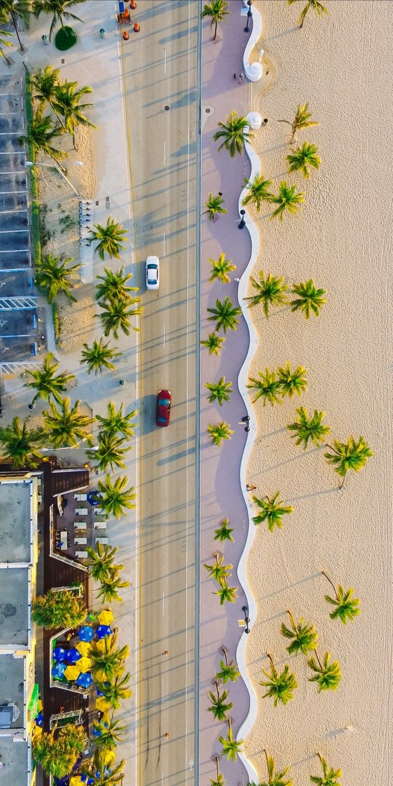
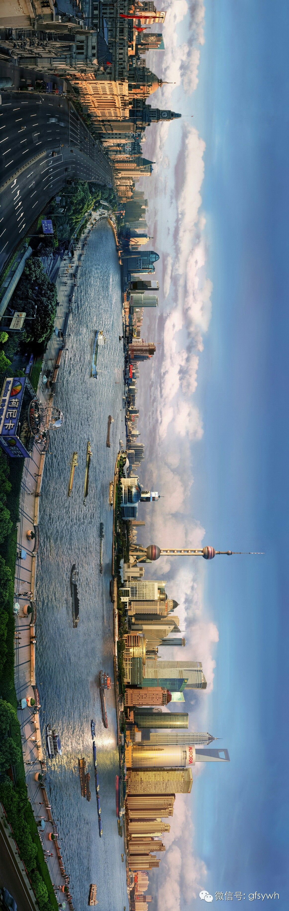
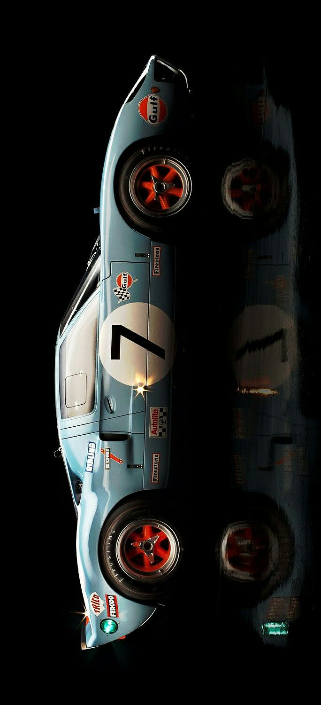

Nama: Thareq Aqsha
Umur: 23 Tahun
TTL: Samarinda, 27 Desember 2002
Pendidikan: SMA
Hobi: Jogging
Saya adalah seorang individu yang memiliki semangat belajar yang tinggi dan selalu ingin mengembangkan diri dalam berbagai bidang, terutama di dunia teknologi dan pemrograman. Saya memiliki ketertarikan pada pembuatan website dan aplikasi sederhana, serta senang mempelajari hal-hal baru yang dapat meningkatkan kemampuan saya di bidang digital. Dalam keseharian, saya terbiasa bekerja dengan teliti, disiplin, dan bertanggung jawab terhadap tugas yang diberikan. Saya juga mampu bekerja secara mandiri maupun dalam tim, serta selalu berusaha menyelesaikan pekerjaan dengan hasil yang maksimal. Ketika menghadapi kesulitan, saya tidak mudah menyerah dan berusaha mencari solusi terbaik untuk menyelesaikannya. Selain itu, saya memiliki motivasi yang kuat untuk terus berkembang dan mengikuti perkembangan teknologi yang semakin pesat. Saya percaya bahwa dengan belajar dan berlatih secara konsisten, saya dapat mencapai tujuan yang saya inginkan di masa depan, khususnya dalam bidang teknologi informasi. Saya juga memiliki keinginan untuk menjadi pribadi yang lebih baik, baik dalam hal keterampilan maupun sikap. Oleh karena itu, saya selalu terbuka terhadap kritik dan saran yang membangun agar saya bisa terus memperbaiki diri.